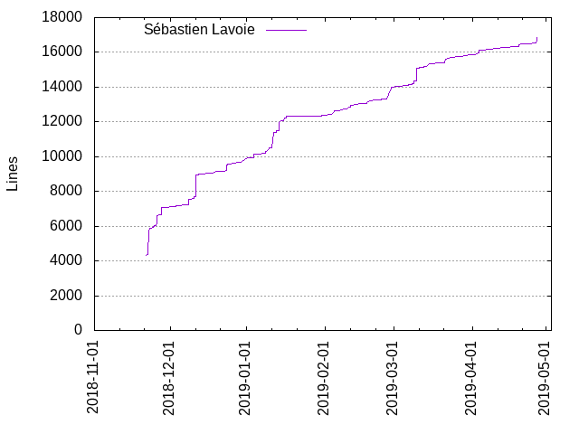
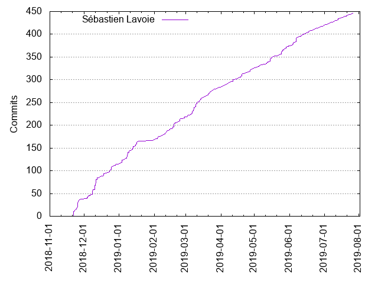

Authors
| Author | Commits (%) | + lines | - lines | First commit | Last commit | Age | Active days | # by commits |
|---|
| Sébastien Lavoie | 405 (100.00%) | 24818 | 14755 | 2018-11-21 | 2019-06-17 | 207 days, 18:07:42 | 175 | 1 |


| Month | Author | Commits (%) | Next top 5 | Number of authors |
|---|
| 2019-06 | Sébastien Lavoie | 30 (100.00% of 30) | | 1 |
| 2019-05 | Sébastien Lavoie | 49 (100.00% of 49) | | 1 |
| 2019-04 | Sébastien Lavoie | 42 (100.00% of 42) | | 1 |
| 2019-03 | Sébastien Lavoie | 66 (100.00% of 66) | | 1 |
| 2019-02 | Sébastien Lavoie | 50 (100.00% of 50) | | 1 |
| 2019-01 | Sébastien Lavoie | 53 (100.00% of 53) | | 1 |
| 2018-12 | Sébastien Lavoie | 77 (100.00% of 77) | | 1 |
| 2018-11 | Sébastien Lavoie | 38 (100.00% of 38) | | 1 |
| Year | Author | Commits (%) | Next top 5 | Number of authors |
|---|
| 2019 | Sébastien Lavoie | 290 (100.00% of 290) | | 1 |
| 2018 | Sébastien Lavoie | 115 (100.00% of 115) | | 1 |
| Domains | Total (%) |
|---|
| gmail.com | 404 (99.75%) |
|---|
| users.noreply.github.com | 1 (0.25%) |
|---|